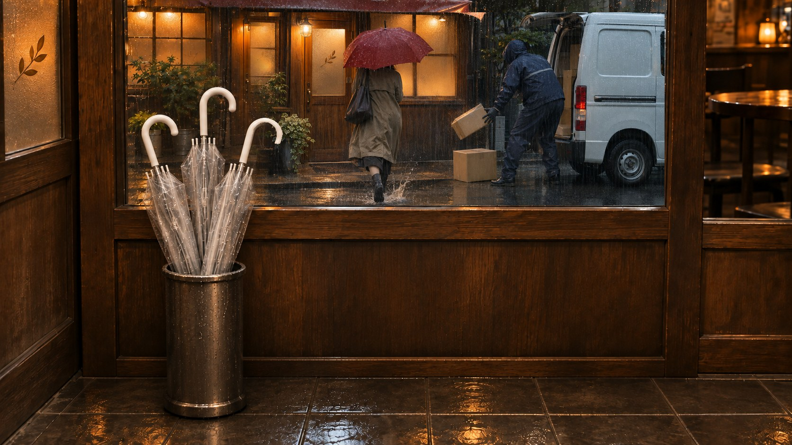
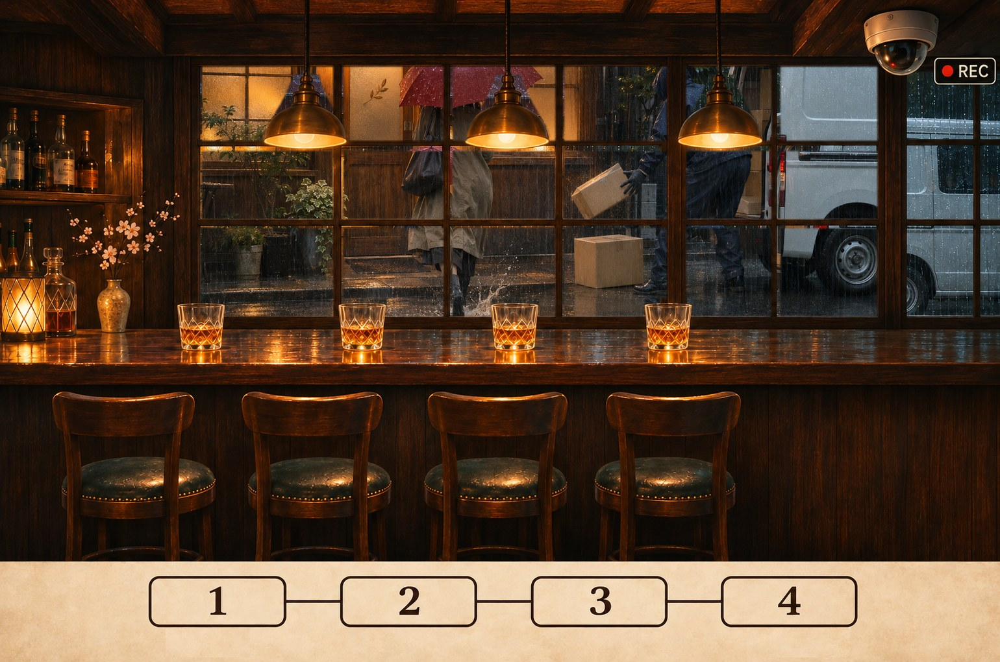
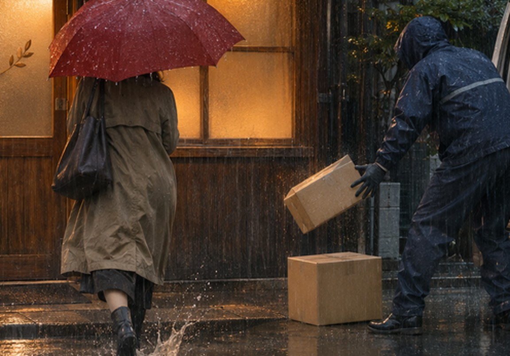
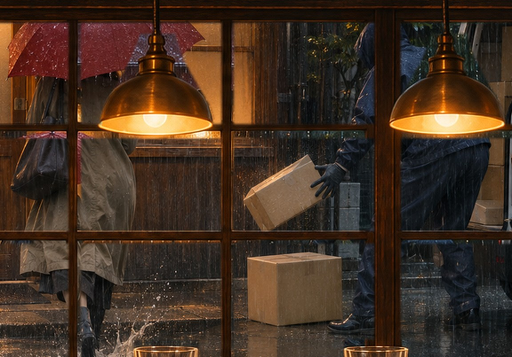

赤い糸の先 ／ 第四話
二度降った雨
二枚とも、喫茶店「木窓」の写真だった。
一枚は、客の透明な傘が入れ替わった夜。もう一枚は、カウンターのグラスに薬が入れられた夜。発表資料には、それぞれの日付と『事件当夜』の四文字が添えてあった。
「同じ店だからね」
瀬尾は一度そう言って、脱いだ上着を椅子の背に掛け直した。
事件が違っても、カウンターや窓の位置は同じだ。だが、水城が見ていたのは店の外だった。赤い傘を差した人のそばに白い車があり、荷台から荷物がずり落ちかけていた。

040 ／ 傘が入れ替わった夜
046 ／ グラスに薬が入れられた夜水城は二枚目を拡大した。傾いた箱の角に向かって、人の手が伸びている。赤い傘の下では、歩いている人の片足が上がっていた。
浮いた靴のすぐ後ろで、水しぶきが斜めに跳ねていた。

040 ／ 窓の外
046 ／ 窓の外一枚目でも、同じ場所に同じ形のしぶきがあった。
「一枚ずつ見てたら、分からなかったかも」
瀬尾は少し椅子を引き、二枚を一緒に見た。
「傘も車も、人が同じならまた写る。でも雨まで同じ形にはならない」
「どっちの説明を訂正すればいい？」
瀬尾は日付を読み直した。
「それが分かる写真を探さないと。これだけじゃ、どっちの夜かも分からない」
水城は広報向けの確認票に、『窓外に同一画像。実際の撮影日は未確認』と書いた。別の担当から戻ってきた票には、『事件そのものの日付に変更なし』と補記されていた。
そのまま数日が過ぎた。
捜査本部の最終報告が届いた日、水城は照合に使った紙を、どの箱へ戻すべきか考えていた。封筒は三箱に分かれている。男の写真も三箱に分かれる。まとめて残す場所が要ると思ったとき、係長が厚い報告書を机に置いた。
「最後の頁を見てくれ」
紙の上には、男の後ろ姿が写っていた。紺の上着、白い当て布、茶色の鞄。男は書斎らしい部屋の机の前に立っていた。机の上に封筒があり、そのそばに二枚のメダルが置かれていた。
水城は写真の説明を読んだ。
『対象人物が関連事件の物品を一か所に集めていた場面』。
報告書は、その男が一連の事件を指示したと結論づけていた。

「これ、うちから回した写真とは別ですね」
水城が言うと、係長はうなずいた。
「最終報告の添付で初めて見た。関連捜査を終結するそうだ」
係長は、受領の印を押す欄に付箋を貼った。水城は引き出しを開けた。印鑑の隣に、野鳥園の封の写真を印刷したときの、黒い紙の切り抜きが一枚残っていた。
報告を閉じかけ、机の封筒から目を上げたとき、窓の赤い傘が目に入った。
その隣の窓ガラスには、傾いた箱へ腕を伸ばす人が写っている。水城は紙を伏せずに置いた。端末で木窓の写真を開き、窓の下の路面まで拡大した。
一度目は、二枚が似すぎていると思った。今度は、何を探せばいいか分かっていた。
赤い傘の下で、水しぶきが同じ形に跳ね上がっていた。
「係長。この写真、最初にどの記録に載ったんでしょう」
廊下に出かけた係長が振り向いた。
水城は二枚を並べた。係長は画面を見たまま戸口から戻ってきて、椅子を一つ引いた。